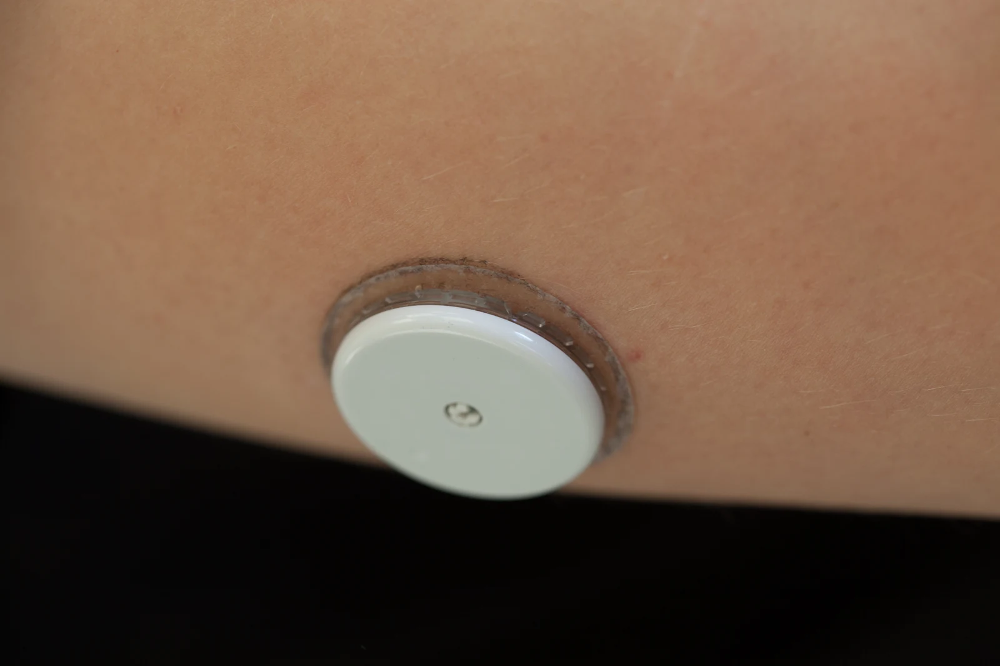
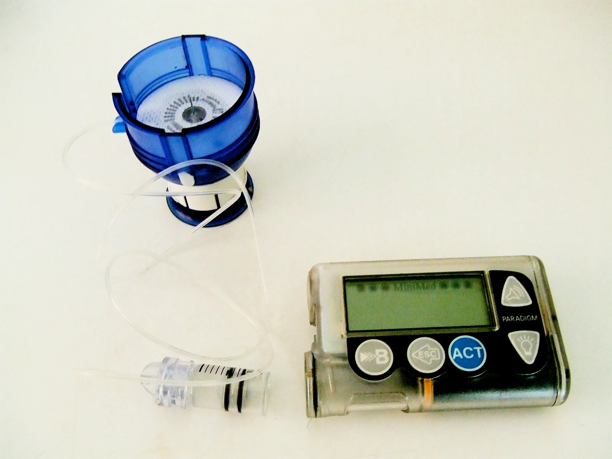

原文圖表與圖片授權
原 PDF 全部圖表：9 項，逐項獨立成頁
來源：Olsen MT, et al. Diabetes Care. 2026. DOI: 10.2337/dci26-0091。原圖表版權歸 ADA／EASD；由使用者提供之 PDF 擷取。保留完整圖表、英文標籤及圖說，僅裁除圖表外頁面內容。
- 第 4 張 · Graphical abstract｜原文圖像摘要（PDF 1） · 高解析原圖
- 第 8 張 · Table 1｜低血糖與高血糖風險因子（PDF 4） · 高解析原圖
- 第 11 張 · Figure 1｜住院 CGM 指標與目標（PDF 6） · 高解析原圖
- 第 14 張 · Figure 2｜胰島素調整的三個血糖區間（PDF 7） · 高解析原圖
- 第 19 張 · Table 2｜Non-AID pump 與 AID 的胰島素治療（PDF 7） · 高解析原圖
- 第 21 張 · Table 3｜由 pump／AID 轉換至注射治療（PDF 8） · 高解析原圖
- 第 31 張 · Table 4｜住院裝置照護工作流程（PDF 9） · 高解析原圖
- 第 32 張 · Figure 3｜住院糖尿病裝置管理流程（PDF 9） · 高解析原圖
- 第 34 張 · Table 5｜電子病歷的記錄項目（PDF 10） · 高解析原圖


免費使用的照片
CGM 上臂配戴照片

Thirunavukkarasye-Raveendran · CC BY 4.0
原檔：FreeStyle libre am Oberarm und Auslesegerät-6.jpg（2018）。修改：等比例縮小並轉為 WebP，未裁切；保留作者標示、原始來源與授權連結。
胰島素幫浦與輸注組照片

原檔：Insulin pump and infusion set.JPG（2007）。作者釋出為 public domain。修改：等比例縮小並轉為 WebP，未裁切。
照片用於外觀示意，不代表作者、製造商或學會背書；不能由照片判斷特定型號是否具 AID、住院或影像檢查使用許可。
個人標誌
沿用使用者既有個人 logo；非醫院官方 logo。原圖表、照片與個人標誌各自適用其權利聲明，不能將本頁照片的免費授權套用到期刊圖表。